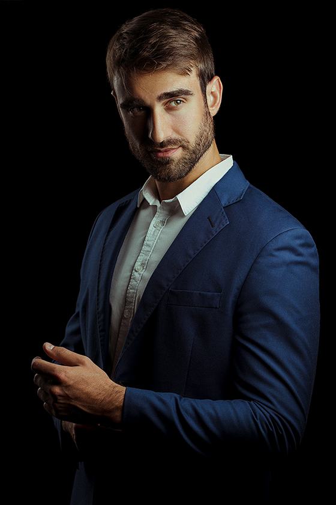

Team
Team
Sami Abu Touq
Sami is a second-year Computer Science student at Princess Sumaya University. With a passion for technology that started at a young age, Sami has a keen interest in software engineering and data science. He thrives on solving complex problems and enjoys the process of developing efficient and innovative software solutions. Dedicated and curious, Sami is committed to advancing his skills and making meaningful contributions to the field of computer science.

Yazan Bdair
Yazan is a second-year Computer Science student at Princess Sumaya University. His journey in the field of technology began out of a deep fascination with how computers work and the limitless possibilities they offer. He is particularly interested in software development and artificial intelligence and enjoys tackling challenging problems and creating innovative solutions. Yazan loves exploring new technologies, participating in coding competitions, and collaborating on exciting projects with his peers.

Muhammad Almujahed, currently enrolled in the Software Engineering program at PSUT, is a beacon of dedication and ambition. His fervent passion for technology and innovation is evident in his relentless pursuit of academic excellence and personal growth. Renowned among peers and professors alike for his analytical thinking, adept problem-solving skills, and proactive approach to learning, Muhammad stands out as a shining example of student leadership.